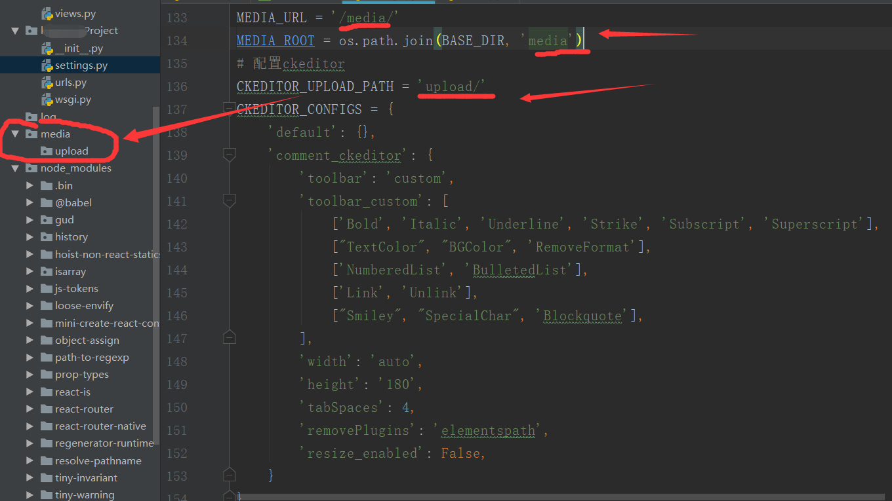
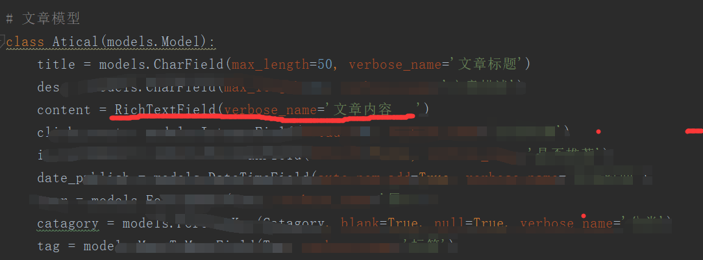

django-ckeditor库的使用步骤：
1.在命令行下安装django-ckeditor这个库；
命令：pip install django-ckeditor
2.安装成功后，配置Django项目中的settings.py文件：
2.1：将ckeditor和ckeditor_uploader注册到INSTALLED_APPS中：
2.2：配置富文本编辑的存储路径，以及ckeditor的配置如下图：

3.在模型（models.py文件）中引入富文本编辑器，并且在相应的字段内使用
3.1：引入django-ckeditor富文本编辑器：
from django.contrib.auth.models import AbstractUser
3.2：在模型的相应字段中使用：

4.本项目中manage.py文件下重新执行迁移，生成迁移文件
4.1 生成迁移文件：
python manage.py makemigrations
4.2 执行迁移：
python manage.py migrate
5.启动Django项目并且进入刚在所改模型的字段页面中，可以看到有富文本编辑器生成：
说明：本文只是本人学习笔记，仅供参考；之前网上找过很多富文本编辑器的配置方法，
最后发现用Django框架中的ckeditor也能更快很好的实现富文本编辑器的功能，最后就
选择了django-ckeditor库